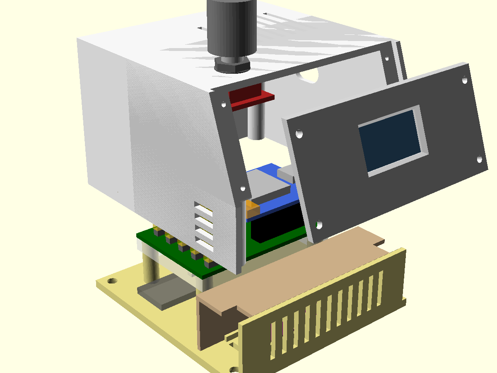
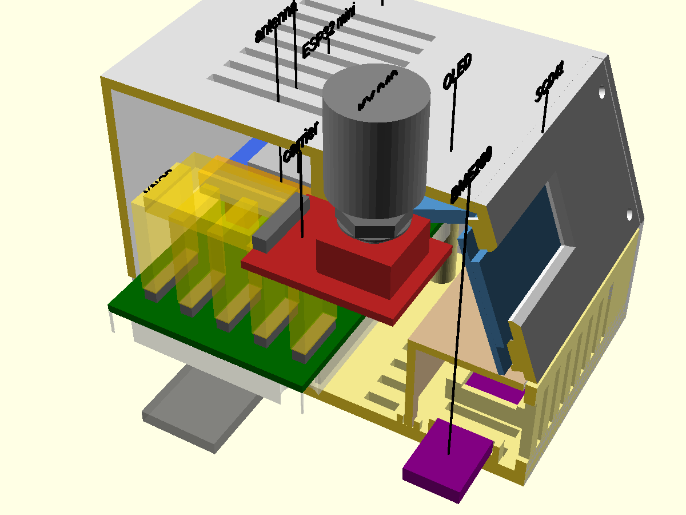
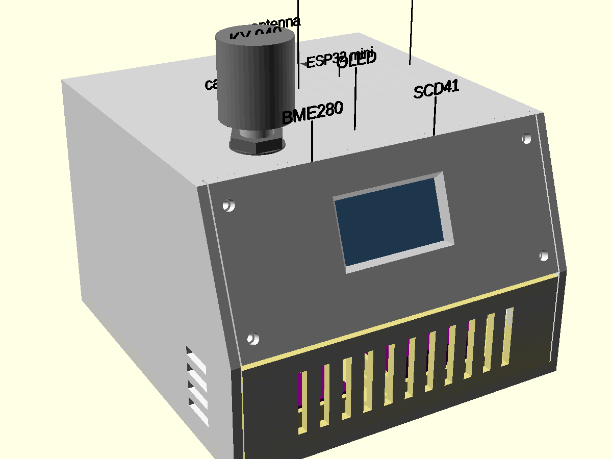
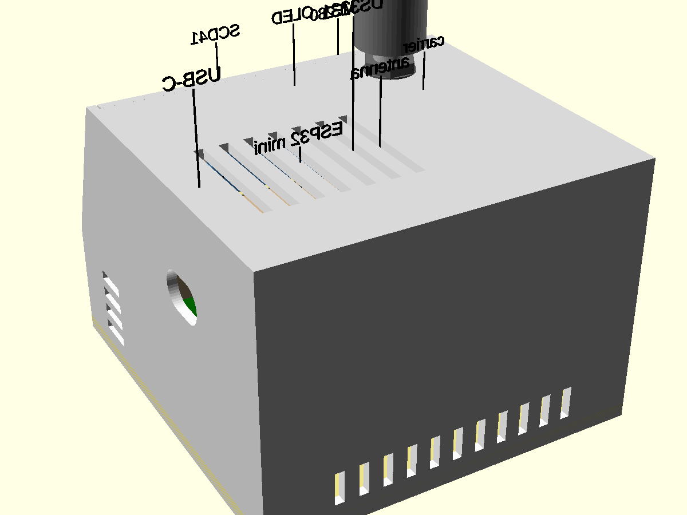

Desk display: assembly
v1 enclosure: 80 × 84 × 57 mm, five printed parts. Source: enclosure/README.md, enclosure.scad.




Screws
All self-tapping, from the two kits (parts.py show screws). 19 in total.
| Qty | Screw | Kit | Where |
|---|---|---|---|
| 4 | M3 × 10 round head | silver | Base to body. Turn the case over; one screw in each corner of the base, up into the body. The holes are printed, just screw in. |
| 4 | 2 × 6 | black | Front plate to body. Two screws down each side of the screen plate, from the front, into the ledges on the side walls. Holes printed. |
| 4 | 2 × 4 | black | OLED to the front plate. From behind, through the OLED's 4 corner holes into the posts under them. Holes printed. |
| 4 | 2 × 6 | black | Carrier board to base. Through the perfboard's own corner holes into the 4 tall posts on the base, before the ESP32 is plugged in. |
| 2 | 2 × 5 | black | DS3231 to the base. Through its two holes at the 6-pin end into the posts under them. Holes printed. |
| 1 | 2.6 × 6 | black | BME280 to the base. Through its one hole into the post under it. Hole printed. |
Other parts
| Qty | Part | Note |
|---|---|---|
| 1 | KY-040's own M7 nut + washer | clamp the knob to the top from outside |
| 5 | Dupont jumpers | KNOB (5-pin) + four I2C (4-pin); cut to length now the case is here |
| 4 | Rubber feet, ≥ 2 mm | lift the floor's air slots off the desk |
| 1 | Knob cap | pushed on last |
Before assembling: dry fit
Do these with nothing wired. If something is off, only that part gets reprinted.
- Carrier on the 4 tall posts, bare (no ESP32): its corners sit on the posts and the ESP32's USB lines up with the side hole.
- OLED in the front plate: flat between the 4 corner stops; its 4 screws pull it flat without bending it. With it running, the time (left), the date's last digit (right) and the bottom row show in full.
- Front plate drops in between the side walls; its holes meet the rail pilots.
- Knob: the collar passes the 7.3 hole (else drill 7.5); the board sits between the two ribs; the nut tightens with thread to spare.
- Base: the vented strip sits ~1 mm below the plate's bottom edge; the screws go in without forcing.
- USB: a cable plugs in fully through the right-side hole.
Assembly order
- DS3231 onto its posts on the basecoin cell up, 6-pin end left; a screw through each of the two holes at that end. Dupont on its 6-pin end; the cable goes up past the carrier's left edge.2 × 2×5 black
- Carrier onto the 4 tall posts, before the ESP32 goes inThrough its own 4 corner holes. Screw it down, then plug the ESP32 in: with it in, the screwdriver can't reach two of the screws.4 × 2×6 black
- ESP32 mini into its socketscan up, USB-C pointing out the right side, antenna end left.
- Sensors into their pockets, hood onBME280: one screw through its hole into the post under it. SCD41: pin end first, tilted, under the two lips, then let the sensor end down onto the ledges. Both in the low bay at the front; cables out through the notch in the hood's back wall. The hood sits on the base between two ribs.
- Knob up through the top from insidepins to the back, board between the ribs; washer + nut from outside, then the cap.
- OLED onto the front plateplate face-down on the desk, glass flat between the stops, pins at the top; a screw through each corner hole.4 × 2×4 blackv1 print: no posts, the window is off. A new plate is coming; until then, a dab of hot glue at two corners.
- Cables onto the carrierKNOB at the back, the four I2C headers in front (two of them under the knob).
- Front plate onto the bodydrop it onto the rails between the side walls, screw from the front.4 × 2×6 black
- Body down onto the basescrew from below into the corner bosses, then the rubber feet.4 × M3×10 silver
After closing
- Upside-down picture → flip the two orientation bytes in
main/display.c(0xA0/0xC0), not the board. - Compare the BME280 with a reference thermometer, case open vs closed (heat from the ESP32).
- Watch for
PWR NOon the boot screen (brownout).